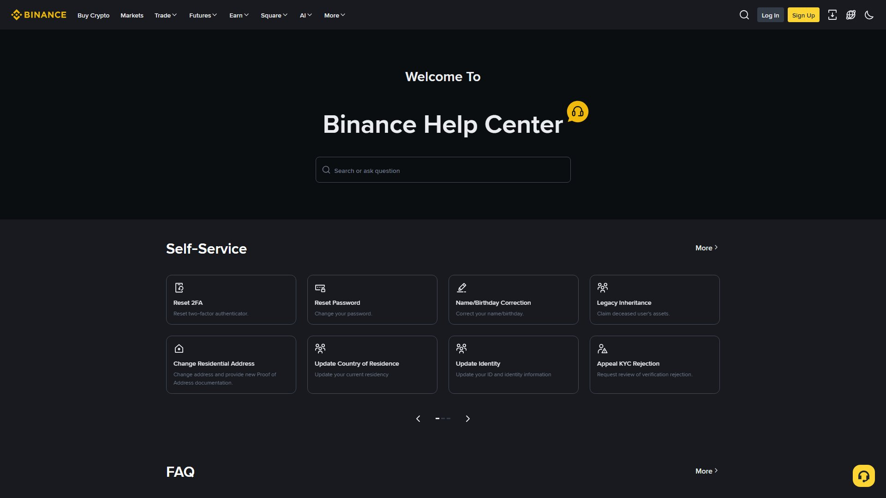

اکاؤنٹ کی پابندی = جب بائننس اپنے رسک کنٹرول یا تعمیل (compliance) کی بنیاد پر آپ کے اکاؤنٹ پر کوئی حد لگا دیتا ہے — ٹریڈنگ روکنا، وائیدراول منجمد کرنا، یا مزید تصدیق مانگنا۔ گھبرانے کی بات نہیں؛ تقریباً ہر صورتِ حال کا ایک باقاعدہ حل موجود ہوتا ہے۔ یہ باب آپ کو ہر مسئلے کی پہچان اور درست ردِعمل سکھائے گا۔

| قسم | مطلب | عام وجہ |
|---|---|---|
| KYC Re-verification | شناخت دوبارہ جانچی جا رہی ہے | تفصیلات کی عدم مطابقت |
| Account Restriction | کچھ یا تمام عمل محدود | رسک کنٹرول |
| Trading Ban | ٹریڈنگ بند | مشتبہ سرگرمی |
| Withdrawal Freeze | نکاسی روکی گئی | اضافی تصدیق درکار |
| IP Restriction | مخصوص علاقے/آئی پی پر حد | ریگولیٹری/رسک |
| Region Restriction | علاقے میں سروس دستیاب نہیں | قانونی تقاضا |
⚠️ یہ سب ایک جیسے نہیں۔ "سرور ڈاؤن" ایک تکنیکی مسئلہ ہے (نیچے 27.5)؛ "اکاؤنٹ کی پابندی" ایک تعمیل/رسک مسئلہ ہے۔ دونوں کا حل مختلف ہے۔
1. تصاویر غیر واضح / کٹی پھٹی
2. نام یا شناختی تفصیلات میں عدم مطابقت
3. معلومات میں تبدیلی (نام، پتہ، دستاویز کی تجدید)
4. مختلف علاقے/آئی پی سے سرگرمی
5. غیر معمولی ٹریڈنگ پیٹرن1. وہی دستاویز استعمال کریں جو اکاؤنٹ پر درج ہے
2. تصاویر اچھی روشنی میں، مکمل کناروں کے ساتھ
3. نام بالکل ID کے مطابق (عربی/انگریزی ہجے یکساں)
4. VPN بند کریں — اپنے اصل علاقے سے درخواست کریں
5. صرف سرکاری Support چینل سے جواب دیں
6. صبر کریں — جانچ میں عام طور پر کئی گھنٹے تا چند دن| سبب | وضاحت |
|---|---|
| رسک کنٹرول | غیر معمولی منتقلی یا لاگ اِن پیٹرن |
| مشتبہ لنک | ایسے فنڈز جو مشکوک ماخذ سے آئے ہوں |
| نام کی عدم مطابقت | بینک/P2P نام ≠ بائننس نام |
| تیسری پارٹی ادائیگی | کسی اور کے بینک سے ادائیگی |
| اسٹریٹجی فلوری | بہت زیادہ مشتبہ ٹریڈنگ |
| لازمی تعمیل | ریگولیٹری تقاضے |
1. ای میل/نوٹیفکیشن پڑھیں — عین وجہ وہیں لکھی ہوتی ہے
2. سرکاری App/ویب → Support → Case کھولیں
3. جو دستاویز مانگی جائے، صاف اور مکمل بھیجیں
4. جواب میں سچ اور مستقل مزاجی رکھیں
5. ہر بات چیت (Case ID) محفوظ رکھیں🔴 VPN کا مقصد سیکیورٹی نہیں، چھپاؤ ہے — اور بائننس جیسے سخت KYC والے پلیٹ فارم پر یہ آپ ہی کے خلاف پڑ سکتا ہے۔
| نتیجہ | وضاحت |
|---|---|
| مقام میں تضاد | آپ کا علاقہ پاکستان، مگر آئی پی یورپ — رسک الرٹ |
| Acct Flagging | بار بار ملک بدلنا "چوری شدہ اکاؤنٹ" جیسا لگنا |
✅ اپنے اصل علاقے سے اور اپنے مستقل نیٹ ورک پر لاگ اِن کریں۔ سفر میں ہوں تو بائننس کو پہلے مطلع کریں۔
1. بہت زیادہ ٹریفک (بڑے مارکیٹ ایونٹس)
2. طے شدہ مینٹیننس
3. نیٹ ورک/براؤزر کا مسئلہ
4. ایپ کا پرانا ورژن1. بائننس اسٹیٹس صفحہ (status.binance.com) دیکھیں
2. ایپ/براؤزر کی cache صاف کریں یا اپ ڈیٹ کریں
3. دوسرے نیٹ ورک (موبائل ڈیٹا) پر کوشش کریں
4. بائننس کے سرکاری سوشل چینلز پر اعلان دیکھیں
5. پُرسکون رہیں — آپ کے اثاثے محفوظ ہیں💡 سرور ڈاؤن = آپ کے پیسے محفوظ — یہ صرف ایک عارضی تکنیکی رکاوٹ ہے، اکاؤنٹ کی پابندی نہیں۔
| ✔ درست | ✘ غلط |
|---|---|
| سرکاری App/ویب سے ایک واضح Case | کئی جعلی ای میلز، مختلف "ایجنٹوں" سے |
| مانگی گئی دستاویز، صاف اور مکمل | جعلی/ترمیم شدہ دستاویز (مستقل بین) |
| صبر اور ایک جگہ بات چیت | بار بار نئے ٹکٹ، حقیقت بدلنا |
| سچ اور مستقل مزاجی | دباؤ ڈالنا یا دھمکیاں |
پابندی کا مطلب سزا نہیں، احتیاط ہے۔ بائننس ہر اکاؤنٹ کو اُسی نظر سے دیکھتا ہے جس طرح بینک غیر معمولی لین دین کو — تعمیل کا مقصد آپ کی (اور باقی صارفین کی) حفاظت ہے۔
اس لیے گھبرائیں نہیں، راستہ پکڑیں: سرکاری Support، صاف دستاویز، سچی بات، اور صبر۔ یاد رکھیں: کوئی "باہر کا ایجنٹ" آپ کا اکاؤنٹ واپس نہیں دلا سکتا — صرف بائننس کا اپنا Support کر سکتا ہے۔